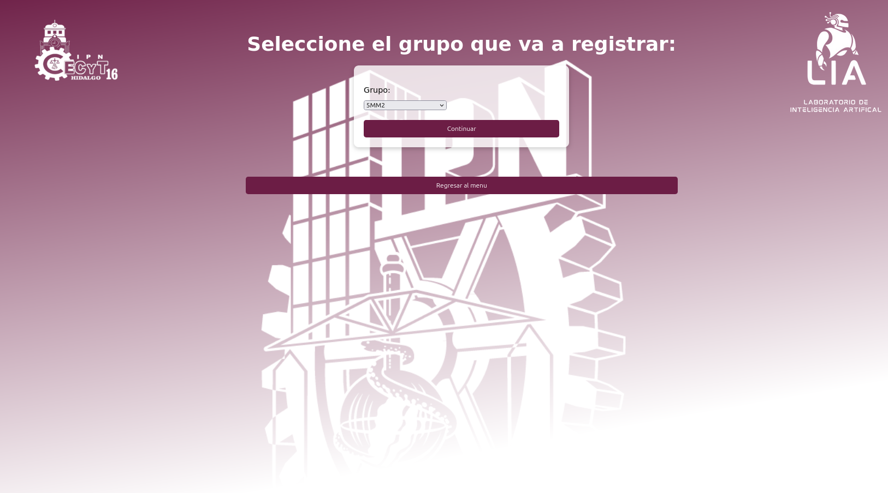
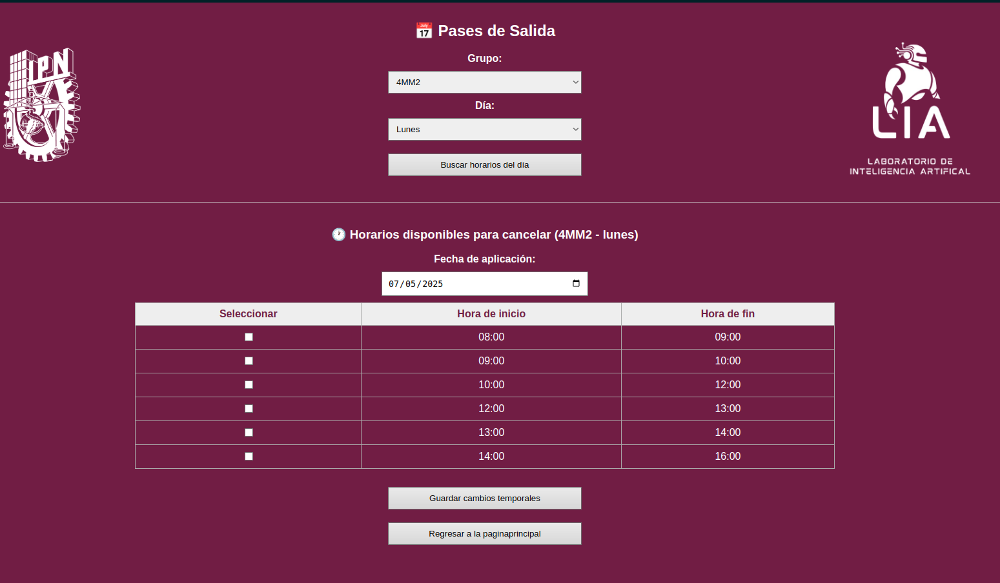
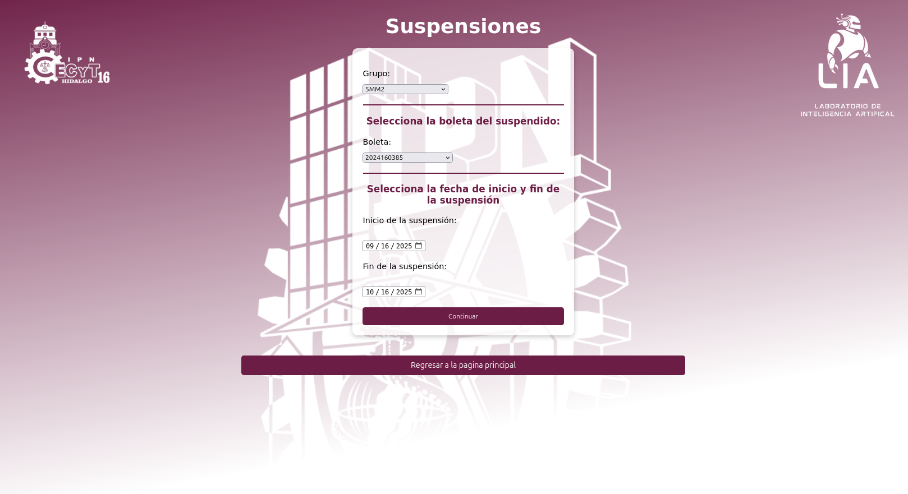
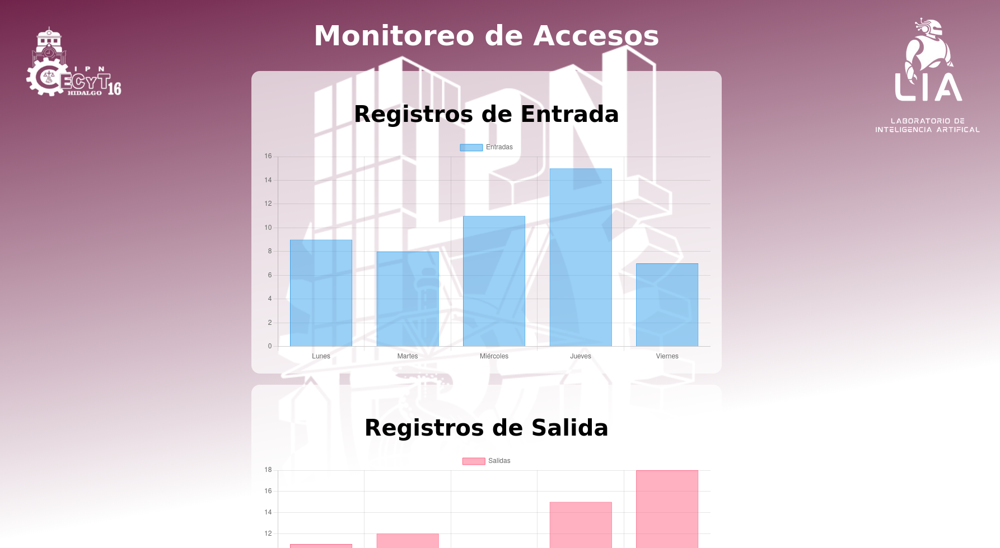
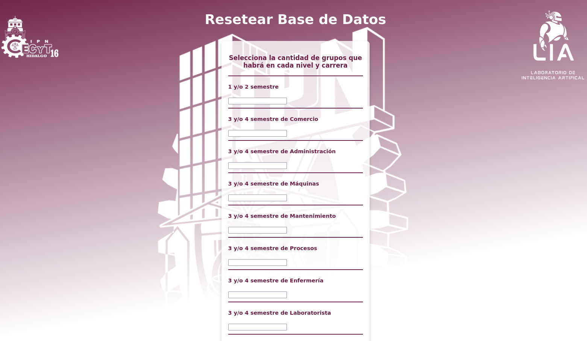

Establece el grupo a registrar para posteriormente registrar la credencial y el horario.

Establece pases de salida temporales para un grupo especifico con su horario correspondiente al dia.

Maneja las suspensiones mediante elegir el grupo y posteriormente la boleta del suspendido.

Visualizacion grafica de cuantos alumnos entran y salen cada semana, para tener un conteo real y practico.

Se BORRA TODO los registros, usar con cuidado. De igual forma se selecciona el nuevo semestre y se establece la cantidad de grupos de este mismo
